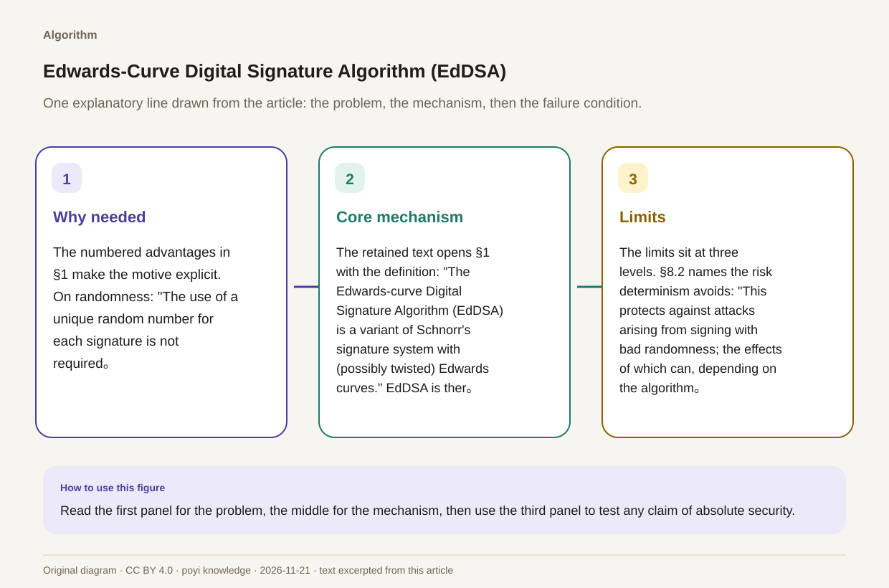
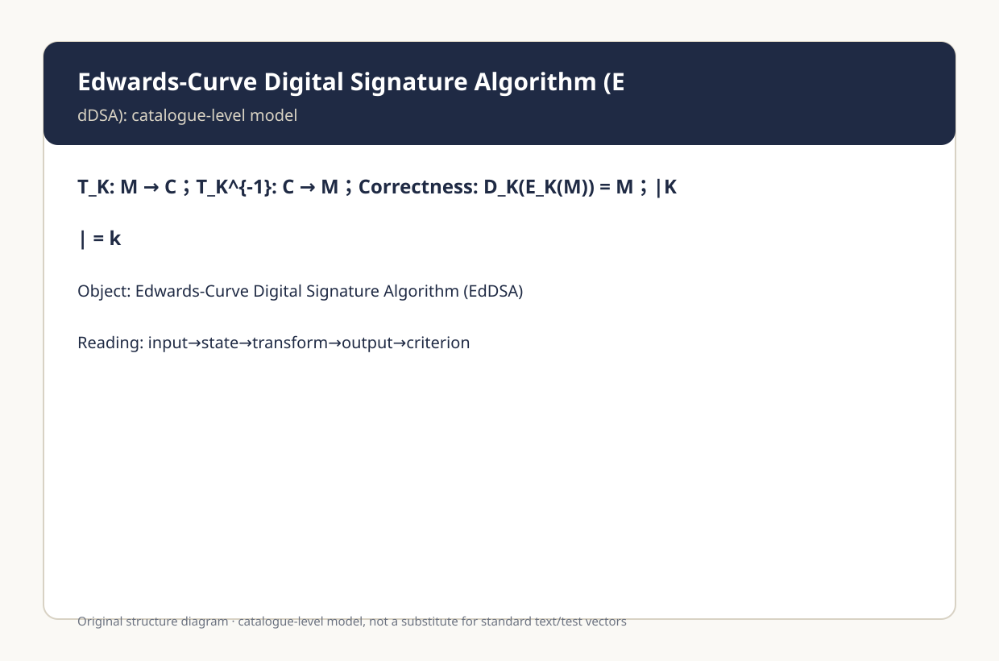

Principles
Algorithm: Edwards-Curve Digital Signature Algorithm (EdDSA Edwards 曲线签名). The retained text opens §1 with the definition: "The Edwards-curve Digital Signature Algorithm (EdDSA) is a variant of Schnorr's signature system with (possibly twisted) Edwards curves." EdDSA is therefore a Schnorr signature over (possibly twisted) Edwards curves. §3 quantifies it immediately: "EdDSA is a digital signature system with 11 parameters." Together the two sentences give the skeleton of the entry: signature scheme = Schnorr structure + Edwards curve + a set of parameters to be instantiated, with the generic parameter choice itself flagged as "not intended to be implemented directly", so deployment uses concrete parameter sets such as Ed25519 and Ed448.

Why it matters
The numbered advantages in §1 make the motive explicit. On randomness: "The use of a unique random number for each signature is not required;" no fresh unique random value is demanded per signature. On side channels: "It is more resilient to side-channel attacks;" §8.2 gives the cause, "EdDSA signatures are deterministic." the nonce being derived from key and message rather than drawn at random. Read together these three sentences are the reason for choosing EdDSA: they remove the high-risk dependency on a good random number for every signature, and, via the unified formulas, reduce sensitivity to randomness and to branching.
Applications
§4 splits the variants by the prehash parameter (that word carries ASCII quotes in the source and is not quoted here): "This may be the identity function, resulting in an algorithm called PureEdDSA, or a collision-resistant hash function such as SHA-512, resulting in an algorithm called HashEdDSA." The next sentence pins the instances this file specifies: "This document specifies parameters resulting in the HashEdDSA variants Ed25519ph and Ed448ph and the PureEdDSA variants Ed25519 and Ed448." The use is thus these five parameterizations — PureEdDSA Ed25519 and Ed448, HashEdDSA Ed25519ph and Ed448ph, plus the contextualized Ed25519ctx. The wording is may, so choosing identity versus a collision-resistant hash is the implementer's trade-off between collision resilience and a single-pass signing interface, not a list this document closes.

Limits & attacks
The limits sit at three levels. §8.2 names the risk determinism avoids: "This protects against attacks arising from signing with bad randomness; the effects of which can, depending on the algorithm, range up to full private key compromise." bad randomness could compromise the private key outright — a failure mode that is designed out rather than an attack on EdDSA itself. §8.4 handles malleability: "Ed25519 and Ed448 signatures are not malleable due to the verification check that decoded S is smaller than l." the anti-malleability coming from that range check. §1 states the root boundary: "A sufficiently large quantum computer would be able to break both." a large quantum computer breaks both Ed25519 and Ed448, a vulnerability §8.5 treats as essentially the same for both. So: determinism guards against randomness misuse, the range check blocks malleability, and quantum computing is the acknowledged pre-condition of failure.
History
The front matter prints both identity and strength. The title line reads Edwards-Curve Digital Signature Algorithm (EdDSA), the author line Josefsson and Liusvaara, the date line January 2017, and the header carries Request for Comments: 8032 and Category: Informational (these header lines are stated outside the quotes). Its status statements are, as printed: "This document is not an Internet Standards Track specification; it is published for informational purposes." followed by the IRTF characterization "Documents approved for publication by the IRSG are not a candidate for any level of Internet Standard; see Section 2 of RFC 7841." both sitting in the Abstract/Status block. The strength is therefore informational, not standards-track, so the sentences above are read as descriptions of the scheme and no must-level Internet Standard obligation is drawn from RFC 8032.
Worked example & verification
Formal model and reproduction steps
[s=k^{-1}\big(H(m)+r d\big)\bmod n]
Edwards-Curve Digital Signature Algorithm: the registered public parameters, key material or randomness, and message are mapped through the stated transformation to an output checked against the registered criterion. The worked example is a structural reproduction, not a new test vector; parameter ranges, standard versions and implementation details remain source-bound.
References
- Wikipedia search entry for EdDSA Edwards 曲线签名. https://zh.wikipedia.org/w/index.php?search=EdDSA%20%20Edwards%20%E6%9B%B2%E7%BA%BF%E7%AD%BE%E5%90%8D
- Handbook of Applied Cryptography (Menezes, van Oorschot, Vanstone). https://www.cacr.math.uwaterloo.ca/hac/